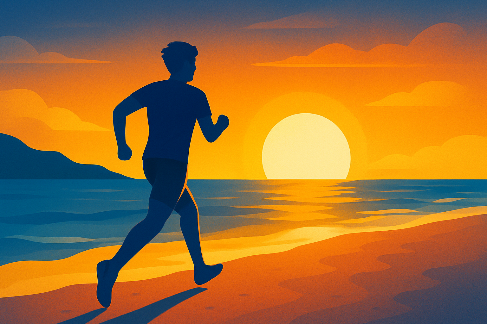

How to Win the Day: Earn Points Before the Game Starts
By Hannah Webb
1 minute read · Written & Published October 12, 2025

To the brain, all challenges are relative: a task that feels easy to a trained mind can feel overwhelming to someone unprepared. When you face a challenge you’re not conditioned for, your brain registers a loss of control–a stress or panic response. That state can quickly spiral into hopelessness. And while hopelessness is deeply human, it’s something to avoid at all costs, as it drains momentum, dulls focus, and quickly can steal your joy.
With all that you are asking yourself to get done in a day, trying to make a wilted mind bloom is one fight you shouldn’t have to face.
That’s why starting your day with a hard workout is so powerful. By voluntarily facing a controlled amount of physical pain and stress first thing in the morning, you condition yourself to handle whatever chaos follows. You’ve already chosen to confront difficulty on your own terms. The result is strength, calm, and confidence when new challenges arise.
Personally, if I can choose to make one of the hardest things I do in a day a run—pushing myself with an able body and willing spirit—coming out the other side refreshed and proud, I’ll take that every time. I’d rather choose my own pain and arm myself with the strength of that choice than to be caught off guard by life later and weakened by circumstance.
Life’s unexpected obstacles can jeopardize your peace, productivity, and joy. A morning workout flips the script: an opportunity to overcome life before it has a chance to overcome you.
You: 1 | Life: 0
Website created by Hannah Webb | Visuals generated with DALL·E, powered by OpenAI